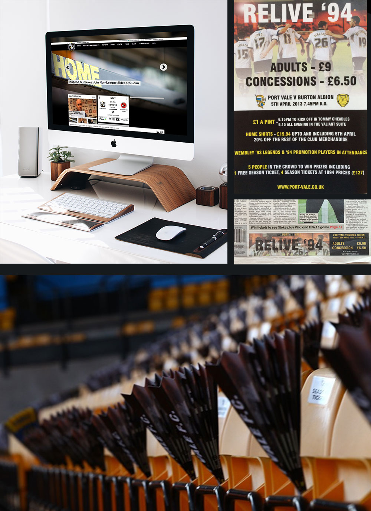

<div id="de_modal-content" class="container">
    <div class="row g-5">
        <div class="col-lg-8">
            
        </div>

        <div class="col-lg-4 de_project-info">
            <h3>Port Vale FC</h3>
            <p>Port Vale Football Club are an english club, in the 1st/2nd divison of the football league. My time at the club was split 50/50. Half of the time was spent looking after corporate clients on matchdays and ensuring all executive boxes, corporate sponship and advertising was sold, and the other half was sprnt building the clubs brand, updating the club website and building the corporate site, along with all other on and offsite media.</p>
           
            <div class="de_project-details">
                <div class="d-field">
                    <i class="fa fa-user-o"></i>Client: <span>Port Vale FC</span>
                </div>
                <div class="d-field">
                    <i class="fa fa-file-text-o"></i>Type: <span>Sales and Marketing</span>
                </div>
                <div class="d-field">
                    <i class="fa fa-calendar-o"></i>Year: <span>2012-2014</span>
                </div>
                <div class="spacer-30"></div>
            <blockquote>
                My role and responsibilites.
            </blockquote>
            </div>
            <p>Responsible for all internal and external communication. Sourcing new businesses to offer advertising, sponsorships and hospitality packages
                Developing working relationships with Executive Box Holders, Vice Presidents & Directors. Organising and attended client meetings to develop close working relationships.</p>       
            <div class="spacer-30"></div>
            </div>
            <blockquote>
                "Chris has proved to be a very reliable and innovative marketing and sales person. Chris worked with me when I was a Consultant at Port Vale and was instrumental in helping deliver sales and marketing that helped the club out of administration. A very personable character with never say no attitude. High levels of internet and social media skills make him an asset to any sales and marketing team. Works well under pressure and without supervision. Would employ again if he lived nearer to our head office."
                <span>John Booth - Director</span>
            </blockquote>
        </div>
    </div>
</div>